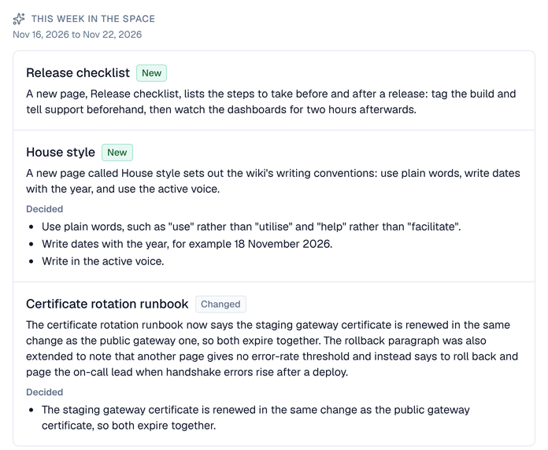
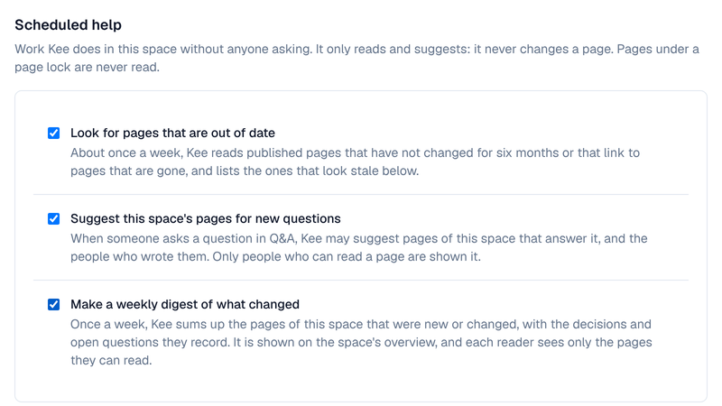

The space digest is a short summary of the week in a space: the pages that were new or changed, what each one says, and the decisions and open questions they record. Kee writes it once a week, on its own, as part of scheduled help. It is shown at the top of the space's overview as This week in the space.

1. Read the digest
- Open the space. The digest is on its overview.
- Read This week in the space: each page is marked New or Changed, with a short summary, and Decided and Open questions where the page records them.
- Select a page's title to open it and check what it really says.
- Each reader sees only the pages they can read now, with their current titles. A page locked or restricted since leaves no trace.
- Each item is written from that page alone: it says nothing about another page. Kee can be wrong; open the page before you rely on it.
- The digest covers the week before (Monday to Monday, UTC), and is made on Mondays. It is written in the language of the space admin who turned it on.
- Nothing of a page under a page lock is ever sent or shown. At most 30 pages a space and week.
- When nothing you can read changed, the digest says so.
- There is no mail: the digest is on the overview only.
2. Turn it on for a space (space admins)
An administrator first turns on Space digest in the Scheduled help card (Scheduled help). Then:
- Open the space and select Space settings in its sidebar.
- Open the Kee tab.
- Under Scheduled help, tick Make a weekly digest of what changed. It is saved at once.

Changing the switch raises space.ai_help.update (with space_digest), which a policy can refuse, and is in the audit log. Unticking it stops a run before the next page.
3. What is sent
The text of each page published in the week, one page per request, with the paragraphs that changed. Kee reads each page as the space, never pages under a page lock, and never anything of a space where Kee is off. Requests come from the scheduled help budget, not from anyone's daily limit.
4. For administrators
| What | Details |
|---|---|
| Switch | Space digest in the Scheduled help card on Settings → Kee → Features and access. Off by default |
| Job | wiki-ai-space-digest, Mondays at 07:00. Change its schedule or run it now under Settings → Scheduler; wiki-ai-help-continue carries the run on |
| Budget | The monthly budget for scheduled help. When it is spent, the digest waits until next month |
| Kept | 26 weeks, then removed by wiki-ai-help-cleanup |
| Event | space.ai_digest.create when a space's digest for a week is done (no text, no titles) |